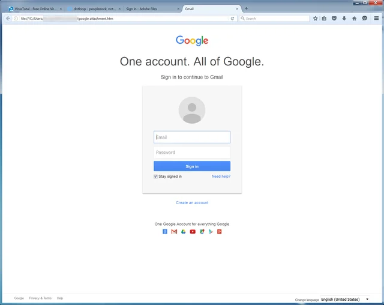

Na této stránce se dozvíte, jak se chránit před kybernetickými zloději a jak se chovat na internetu, tak aby jste se nestali obětí podvodu.
Existuje veliká spousta podvodů, některé se zaměřují na získání osobních údajů k vašim účtům, jiné zas cilí na ukradení vašich financích
Naštěstí již existuje tato vzdělávací stránka, na které vám ukážu jak tyto podvody vypadají a tipy k nim.
(Rady které vám budou poskytnuty, jsou od studenta 2. ročníku SPŠE Olomouc, a z tohoto důvodu se spíše neřidťe těmito rady.)
Takovýto typ podvodů je velice častý a může se stát každému.
Proto je důležité znát, jak tyto podvody vypadají a jak se jim vyhnout.
Zde je menší ukázka, toho jak může takový podvod vypadat:


Na první pohled se může zdát, že je toto pravdivá stránka, ale ve skutečnosti je toto podvodná stránka.
tzv. phishing stránka,
výdává se za originální stránky firmy nebo společnosti, ale není a někdy je to skoro nepoznatelné.
Jak můžete vidět, stránka jako taková působí velice podobně stránce originální např. od firmy Google nebo Adobe.
Ovšem opak je pravdou, a ani jedna ze stránek není opravdová. Stačí jen trochu nepozornosti a můžete předat vaše přihlašovací údaje zlodějům.
Takže, zde je první tip jak se vyhnout takovýmto podvodům:
1. Dvoufázové ověření (2FA)
Dvoufázové ověření je metoda, která vám pomůže ochránit vaše účty. Kdekoliv, kde se tato možnost vyskytuje.
Zjednodušeně vysvětleno, uživateli nebude již stačit znát vaše heslo ale bude už taky potřebovat vaše mobilní zařízení.
Když si zapnete tuto funkci, musíte si propojit telefon s vaším účtem. Na který vám bude zaslán kód skrz SMS.
Poté co zadáte kód z mobilního telefonu, máte HOTOVO!
A tímto způsobem jste právě chráněni před kybernetickými zloději.
2. Jak na správné heslo?
Jistě si myslíte, že tato otázka je hloupá, ale není. tiž o to, že byste měli používat více hesel na různé účty.
Nejlepší heslo je takové, jaké obsahuje alespoň:
- Velké, malé písmena
- libovolné číslice
- Speciální znak
Optimální heslo by mohlo v závěru vypadat nějak takto: "Moj3Hesl0@".